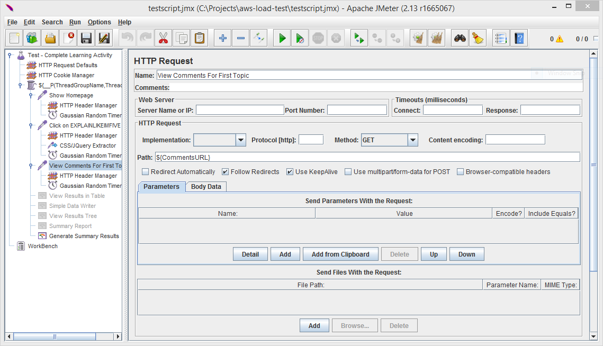
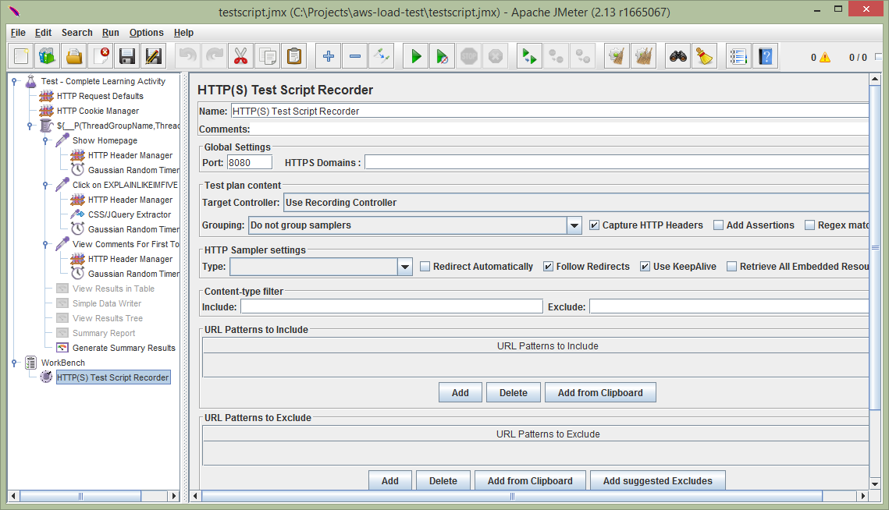
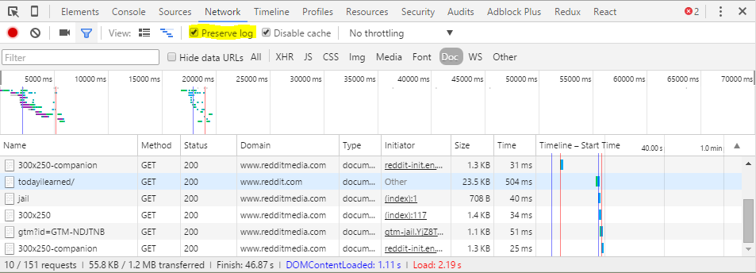
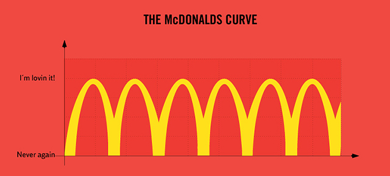
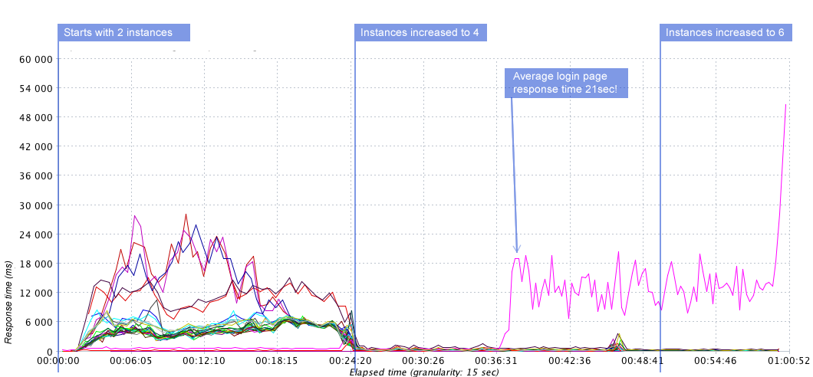

Finding performance bottlenecks with JMeter
Paul Heasley

Why load test your application?
Load testing is performed to determine a system's behavior under both normal and anticipated peak load conditions. It helps to identify the maximum operating capacity of an application as well as any bottlenecks and determine which element is causing degradation.
- Wikipedia
What load testing doesn't cover
- Browser rending times
- Fetching static resources
- Real environment behaviour
Trying to break our system was hard
Decide what response times are acceptable for you
Our findings
- Login was a bottleneck
- Our ability to scale under heavy load was flawed
How to load test your application
- Model a users behaviour
- Simulate load
- Interpret results
- Take action
1. Modelling a users behaviour
Decide on a test tool
- JMeter
- Visual Studio Load Testing
Setup JMeter test
Model the user
 2. Simulate load
Applying load
- Your local PC (< 500 users)
- BlazeMeter
- JMeter and EC2 (fully automated)
- JMeter and EC2 (simple)
github.com/PageUpPeopleOrg/aws-load-test
.
├── kill.sh // run this to shutdown the test on all servers
├── loadtest.properties // the configuration file, the only file you need to edit
├── loadtest.sh // the main script, run this from your local PC to kick off the test
├── server.sh // The remote server script, installs JMeter and runs the test
├── user.properties // JMeter configuration that's copied to all remotes
└── Vagrantfile // A convenient vagrant setup to run the script on windows
loadtest.properties
#!/bin/bash
JMETER_VERSION=2.13
# The following properties should be set:
# jmeter.save.saveservice.output_format=csv
# jmeter.save.saveservice.thread_counts=true
JMETER_PROPERTIES=user.properties
JMETER_TEST=testscript.jmx
# The number of virtual users (VU) or threads to run. PER SERVER (e.g. 3 servers x 300 users = 900 total)
TEST_USERS=50
# The ramp up time in seconds
TEST_RAMP_UP=60
# Test duration in seconds
TEST_DURATION=300
# This is not currently used - to run a Constant Throughput test, enable the Constant Throughput Timer in the test (and potentially disable all Guassian Timers)
TEST_HITS_PER_MIN=360
# This must be an absolute path to your ssh private key
PRIVATE_KEY=$HOME/.ssh/private.pem
USER=ec2-user
# Comma seperated list of remote server IPs to run the test from
SERVERS=xxx.xxx.xxx.xxx,xxx.xxx.xxx.xxx
# A folder to place jmeter and this project under on the server
SERVER_DIR=loadtest
# The name of the logs folder (under the SERVER_DIR) to place logs
SERVER_LOG_DIR=logs
# The name of the log file on the server (under ~/SERVER_DIR/SERVER_LOG_DIR/)
SERVER_LOG_FILE=server.jtl
# The name of the logs folder for the orchestrating machine (e.g. this PC)
LOCAL_LOG_DIR=logs
# The name of the aggregated log file that will be send to loadosophia
LOCAL_LOG_FILE=results.jtl
# Your loadosophia.org access key (get it from the settings page and save to file)
LOADOSOPHIA_KEY=loadosophia.key
LOADOSOPHIA_PROJECT=MyProject
3. Interpret the results
Loadosophia.org

JMeter Graphs
Checkout jmeter-plugins.org

4. Take action
Our login bottleneck
Before
After

Before
After
Our scaling problem
Before

After

Before
After